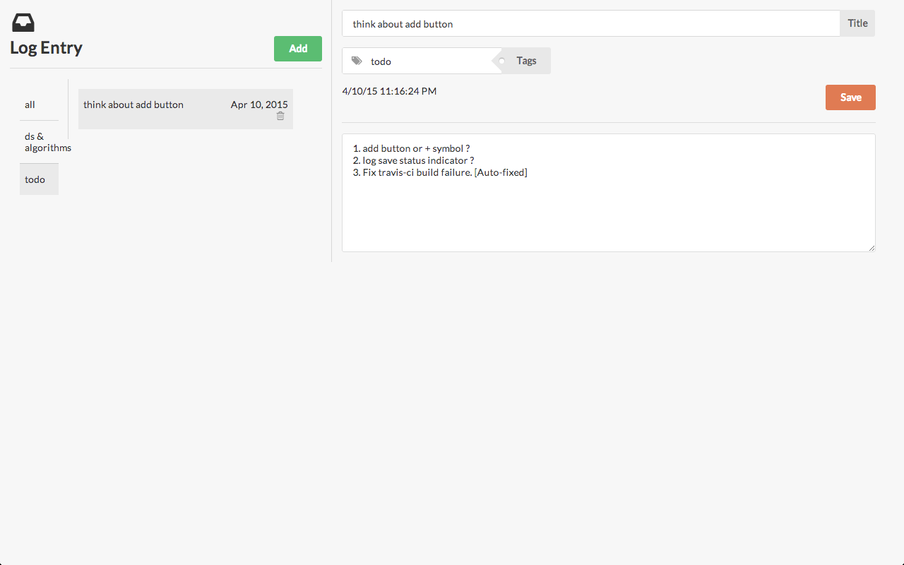

Devlog
A log book.

Features
- Create logs
- Update logs
- Tagging
- Ordering
Create logs
Create logs by clicking on add button. Give a short title and you can specify multiple tags (Type tags seperated by comma).
Write content and click on save.
Update logs
Select a log which you want to update. You can update title, tags and content.
Tagging
Provide tags while creating logs and tags appear automatically in the left navigation. Click on a tag to view all the logs
associated with that tag.
Ordering
All tags and logs are order alphabetically in ascending order.